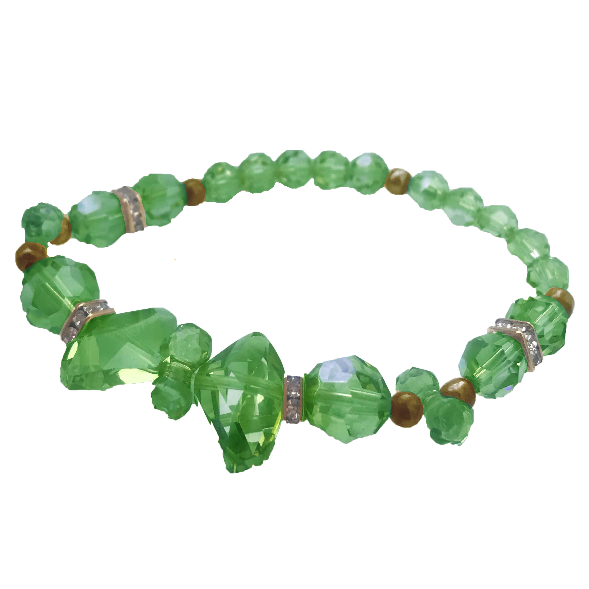

Tell me you’re queer without telling me you’re queer
How LGBTQ2IA+ identity stretches far beyond attraction and into the realm of aesthetics
The first things you’ll notice when you walk into Tommy Chan’s bedroom is a full-body mirror designated for
outfit pics, a clothing rack with a few handpicked pieces for the season and small clusters of houseplants
littered around the room. The Ryerson psychology alumnus said this is how he expresses his queer identity.
“I strongly believe that you can measure just how gay someone is by the way their room looks. Or, in my
case, how many plants they have.” Chan picked up a monstera plant almost as tall as him, with leaves larger
than his head splaying away from his face. “So, in my case, pretty gay.”
This brings up the question: What makes a person queer? Is it their physical and sexual attraction to
someone of the same sex, or is it their stride as they walk down the hallway? Their clay earrings? The way
they style their hair? The colour of their socks? The (obscene) number of houseplants they have? The answer,
according to University of British Columbia researcher Matthew Isherwood, is yes—to all of it.
According to Isherwood’s 2020 paper, Toward a Queer Aesthetic Sensibility: Orientation, Disposition, and Desire, being queer is more than
just who you’re attracted to—it’s something you show the world. He discusses “aesthetic objects” and how we
channel and affirm our desires through them, even if they aren’t necessarily queer-coded.
 Isherwood’s connections to white socks, He-Man figurines and a poster of Leonardo DiCaprio that used to be
on his wall are examples from his own younger years. They helped him to express his queer desires in a way
that was safe and personal. He writes that it helped him to “look on these objects queerly and imagine
someday all this could be free and all this could be [his].”
Isherwood’s connections to white socks, He-Man figurines and a poster of Leonardo DiCaprio that used to be
on his wall are examples from his own younger years. They helped him to express his queer desires in a way
that was safe and personal. He writes that it helped him to “look on these objects queerly and imagine
someday all this could be free and all this could be [his].”
For Chan, his houseplants and clothing did the same thing; they make his room feel like a welcoming and safe
space for him to express his queerness. “I take photos in the mirror of outfits that I would probably never
wear out, with way-too-flashy jewelry and pieces that make me feel most like myself.” As for his plants, he
describes them as his “babies.”
“I love taking care of them and looking at them. They’re my prized possessions and, weirdly, they make me
feel secure about who I am.”
Melanie Singh, a first-year undeclared arts student who describes herself as a “through-and-through
lesbian,” says she uses colour as an identifying marker for her sexuality.
“My mother gave me an emerald-coloured bracelet when I was around eight years old. It used to be her
favourite colour. I’ve always kept it and worn it and since then, it’s somehow become a token of me being
gay.”
Her mother died when Singh was in her mid-teens, before she came out to her. She says she regrets not
telling her before, but she thinks her mother always knew. “She dropped hints all the time and always said
she’d accept me for who I was,” Singh said.
“Maybe that’s why I still associate emerald with being gay—because I know she would’ve loved me still, so it
makes me feel safe and seen.”
By seen, Singh means that she also uses green as a way to show the world who she is. “Just like when people
use rainbow pins and graphic tees to tell the world they’re queer, I use emerald.”

And it works. Singh remembers dates she’s had in the past where she was told the other person knew she was
gay simply because of her emerald necklace or dress, or when they asked about her favourite colour. “It’s
apparently a dead giveaway, a secret language only other lesbians speak.”
This ‘secret language’ can be vital to keeping the queer community alive and safe in a heternormative—and
often homophobic—world.
Historically, queer communities have relied on several coded systems and symbols to help express identity in
a safe yet secretive manner. According to a 2013 paper by Andrew Reilly and Eirik J. Saethre on queer semiotics, red neckties,
suede shoes, inverted pink triangles and the Greek letter lambda have all been used at different points in
time to signal queer desire.
“Queer aesthetic sensibility must detect queer desire in objects and situations that might not be obvious to
others,” Isherwood wrote in his paper. “Through these objects, queer folk can imagine other ways to live and
love away from the harsh criticism of a normative culture that would end them before they begin.”
Patrick Stewart, an alumnus of Ryerson’s English program, does this with the way he dresses. “I’m fairly
closeted and almost no one I meet suspects I’m bi,” he said. He thinks this is because he doesn’t conform to
people’s cookie-cutter ideas about men who date other men. This includes stereotypes like acting
flamboyantly, speaking in a high-pitched tone or using expressive hand gestures.
Stewart is more of an athletic type who’s dated women in the past and has many straight male friends. He
describes himself as a “recluse.” As a bisexual man, Stewart says he’s often thought to be completely gay
 when he dates men or completely straight when he dates women. This form of bi-erasure—the systemic
invalidation and underepresentation of bisexual people in our society—coupled with his closed-off
personality, makes him feel invisible to the queer community and potential male partners.
when he dates men or completely straight when he dates women. This form of bi-erasure—the systemic
invalidation and underepresentation of bisexual people in our society—coupled with his closed-off
personality, makes him feel invisible to the queer community and potential male partners.
“That limits my prospects when it comes to dating men,” Stewart said. “No one expects me to be gay so I
usually have to tell them, either outright or with my clothes.” He wears a “uniform” of tight-fitting pants
and floral print shirts that he says are inconspicuous to his straight peers, while signalling to potential
partners where his desires lie.
This “uniform” still allows him to pass in heteronormative society in order to feel safe and avoid violence.
The Eyeopener previously reported that some queer students at Ryerson often have to “assess the
risk” when choosing between outfits that affirm their identity by subverting norms and outfits that are more
“public-friendly” to avoid harassment. According to the 2014 General Social Survey via Statistics Canada, “those who
identified as lesbian, gay and bisexual were significantly more likely to report experiencing violent
victimization than those who identified as heterosexual.”
 “They say the days of hiding are over, but that’s not always the case,” said Stewart. “I’ve experienced
homophobia on the streets many times when I was with male dates and partners, but I blend in when I’m alone.
I prefer it that way.”
“They say the days of hiding are over, but that’s not always the case,” said Stewart. “I’ve experienced
homophobia on the streets many times when I was with male dates and partners, but I blend in when I’m alone.
I prefer it that way.”
Aesthetic objects play a key role in the LGBTQ2IA+ community, allowing queer people to stay connected to our
innermost selves while validating our desires to the world. Whether it be a houseplant, a colour or an
outfit, “a queer aesthetic sensibility enlarges one’s sense of being in a body,” as Isherwood wrote. “To
practice [it] then, is to be in a constant state of becoming, and to understand that there’s always more to
be seen and heard."
Return to homepage